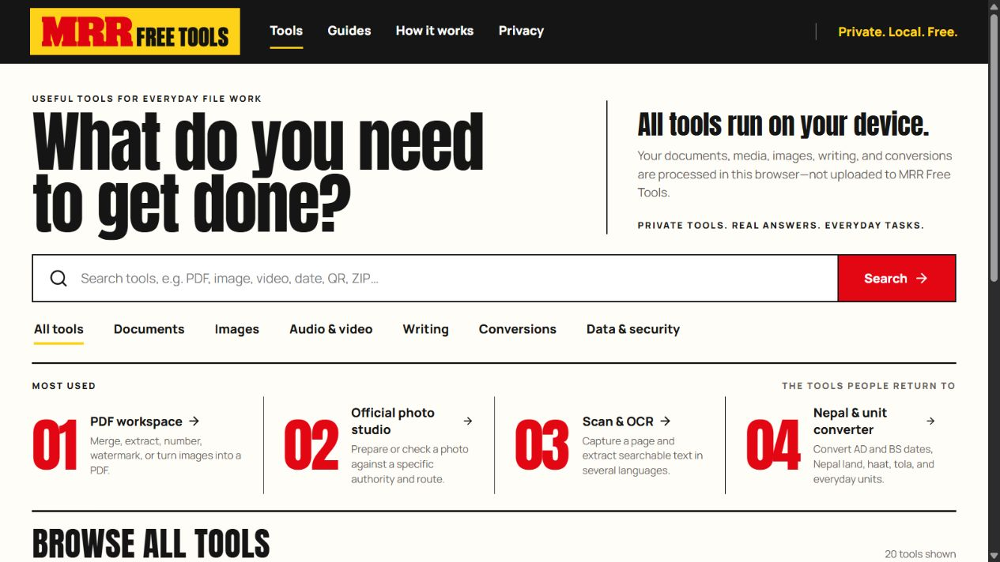

Case study 05 · Browser tools & data utilities
MRR Free Tools
A practical workspace for everyday document, image and data tasks.

Reduce the friction around routine file tasks.
Preparing a PDF, extracting text or converting structured data can send a person through several disconnected tools. The useful design problem is to make supported tasks easy to find, explain the expected input and return a result with clear limits.
I created MRR Free Tools as a browser workspace for those everyday tasks, alongside a public guide website that explains the tools, limitations and source references.
Keep processing understandable and bounded.
A focused TypeScript workspace
I developed PDF, local OCR, image, document and structured-data workflows using TypeScript and browser APIs. The application includes CSV/JSON conversion and chart exports alongside the document tools.
Handle the input deliberately
Bounded inputs, sanitised markup, structured-data handling and targeted safety checks are part of the implementation. Different tasks retain their own format and practical limits rather than promising universal file compatibility.
Separate application and guidance
The installable application and the public guide website have independent static deployment builds. This keeps the working interface distinct from the explanatory content and technical references.
Check the complete task, including the exported file.
A representative check on 26 October 2026 converted a two-record synthetic CSV, including a quoted comma, to JSON and inspected the downloaded result. This checks one current structured-data path; document/image workflows and keyboard/mobile interactions retain their own verification requirements.
A useful check uses a small synthetic file, follows the relevant tool’s instructions and inspects the exported result. Public demonstrations should avoid personal or confidential documents.
Explore the supported toolsLocal processing with explicit network and format boundaries.
Supported selected-file workflows process content in the browser. App loading, external source links and direct-media inputs have their own network behaviour; the relevant tool’s guidance explains those boundaries.
The source remains private and has no public reuse licence. Third-party components retain their notices. This case study presents the public experience and the implementation approach without exposing private project source.